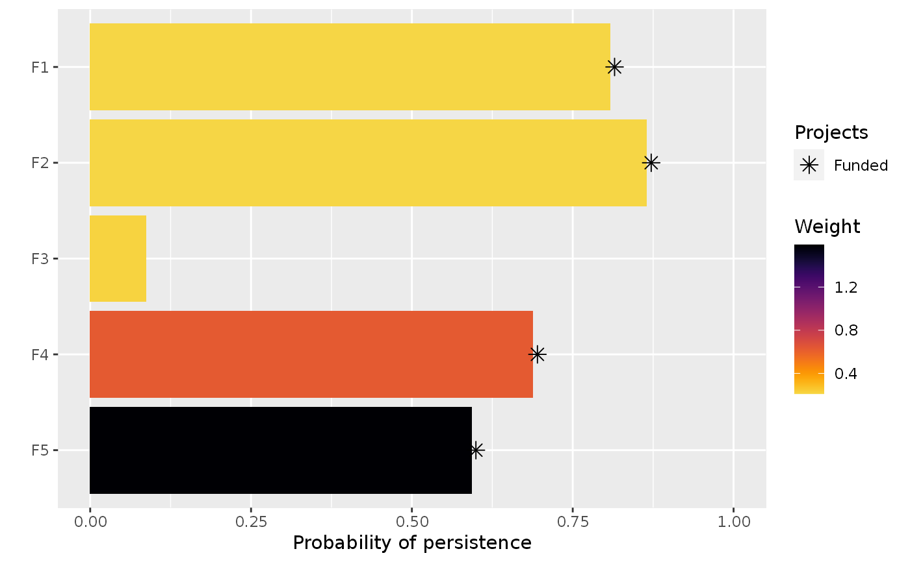

Create a project prioritization problem. This function is used to
specify the underlying data used in a prioritization problem: the projects,
the management actions, and the features that need
to be conserved (e.g. species, ecosystems). After constructing this
ProjectProblem-class object,
it can be customized using objectives, targets,
weights, constraints, decisions and
solvers. After building the problem, the
solve() function can be used to identify solutions.
problem(
projects,
actions,
features,
project_name_column,
project_success_column,
action_name_column,
action_cost_column,
feature_name_column,
adjust_for_baseline = TRUE
)base::data.frame() or
tibble::tibble() table containing project data. Here, each row
should correspond to a different project and columns should contain data
that correspond to each project. This object should contain data that
denote (i)
the name of each project (specified in the argument to
project_name_column), (ii) the
probability that each project will succeed if all of its actions are funded
(specified in the argument to project_success_column), (iii)
the enhanced probability that each feature will persist if it
is funded (using a column for each feature),
and (iv) and which actions are associated with which projects
(using a column for each action). This object
must have a baseline project, with a zero cost value, that represents the
probability that each feature will persist if no other conservation
project is funded.
Since each feature is assigned the greatest probability of persistence
given the funded projects in a solution, the combined benefits of multiple
projects can be encoded by creating additional projects that represent
"combined projects". For instance, a habitat restoration project might
cost $100 and mean that a feature has a 40% chance of persisting, and
a pest eradication project might cost $50 and mean that a feature has a
60% chance of persisting. Due to non-linear effects, funding both of these
projects might mean that a species has a 90% chance of persistence.
This can be accounted for by creating a third project, representing the
funding of both projects, which costs $150 and provides a 90% chance
of persistence.
base::data.frame() or tibble::tibble()
table containing the action data. Here, each row should correspond to a
different action and columns should contain data that correspond to
each action. At a minimum, this object should contain data that denote (i)
the name of each action (specified in the argument to
action_name_column), (ii) the cost of each action (specified in the
argument to action_cost_column). Optionally, it may also contain
data that indicate actions should be (iii) locked in or (iv) locked
out (see add_locked_in_constraints() and
add_locked_out_constraints()). It should also contain a
zero-cost baseline action that is associated with the baseline project.
base::data.frame() or
tibble::tibble()
table containing the feature data. Here, each row should correspond
to a different feature and columns should contain data that correspond
to each feature. At a minimum, this object should contain data that denote
(i) the name of each feature (specified in the argument to
feature_name_column). Optionally, it may also contain (ii) the
weight for each feature or (iii) persistence targets for each feature.
character name of column that contains
the name for each conservation project. This argument corresponds to the
projects table. Note that the project names must not contain any
duplicates or missing values.
character name of column that
indicates the probability that each project will succeed. This argument
corresponds to the argument to projects table. This column must have
numeric values which range between zero and one. No missing values
are permitted.
character name of column that contains
the name for each management action. This argument corresponds to the
actions table. Note that the project names must not contain any
duplicates or missing values.
character name of column that
indicates the cost for funding each action. This argument corresponds
to the argument to actions table. This column must have
numeric values which are equal to or greater than zero. No missing
values are permitted.
character name of the column that contains
the name for each feature. This argument corresponds to the
feature table. Note that the feature names must not contain any
duplicates or missing values.
logical should the probability of
features persisting when projects are funded be adjusted to account for the
probability of features persisting under the baseline "do nothing"
scenario in the event that the funded projects fail to succeed?
This should always be TRUE, except when funding a project
means that the baseline "do nothing" scenario does not apply if a funded
project fails. Defaults to TRUE.
A new ProjectProblem object.
A project prioritization problem has actions, projects,
and features. Features are the biological entities that need to
be conserved (e.g. species, populations, ecosystems). Actions are
real-world management actions that can be implemented to enhance
biodiversity (e.g. habitat restoration, monitoring, pest eradication). Each
action should have a known cost, and this usually means that each
action should have a defined spatial extent and time period (though this
is not necessary). Conservation projects are groups of management actions
(they can also comprise a singular action too), and each project is
associated with a probability of success if all of its associated actions
are funded. To determine which projects should be funded, each project is
associated with an probability of persistence for the
features that they benefit. These values should indicate the
probability that each feature will persist if only that project funded
and not the additional benefit relative to the baseline project. Missing
(NA) values should be used to indicate which projects do not
enhance the probability of certain features.
The goal of a project prioritization exercise is then to identify which management actions---and as a consequence which conservation projects---should be funded. Broadly speaking, the goal of an optimization problem is to minimize (or maximize) an objective function given a set of control variables and decision variables that are subject to a series of constraints. In the context of project prioritization problems, the objective is usually some measure of utility (e.g. the net probability of each feature persisting into the future), the control variables determine which actions should be funded or not, the decision variables contain additional information needed to ensure correct calculations, and the constraints impose limits such as the total budget available for funding management actions. For more information on the mathematical formulations used in this package, please refer to the manual entries for the available objectives (listed in objectives).
# load data
data(sim_projects, sim_features, sim_actions)
# print project data
print(sim_projects)
#> # A tibble: 6 × 13
#> name success F1 F2 F3 F4 F5 F1_action F2_action
#> <chr> <dbl> <dbl> <dbl> <dbl> <dbl> <dbl> <lgl> <lgl>
#> 1 F1_project 0.919 0.791 NA NA NA NA TRUE FALSE
#> 2 F2_project 0.923 NA 0.888 NA NA NA FALSE TRUE
#> 3 F3_project 0.829 NA NA 0.502 NA NA FALSE FALSE
#> 4 F4_project 0.848 NA NA NA 0.690 NA FALSE FALSE
#> 5 F5_project 0.814 NA NA NA NA 0.617 FALSE FALSE
#> 6 baseline_proj… 1 0.298 0.250 0.0865 0.249 0.182 FALSE FALSE
#> # ℹ 4 more variables: F3_action <lgl>, F4_action <lgl>, F5_action <lgl>,
#> # baseline_action <lgl>
# print action data
print(sim_features)
#> # A tibble: 5 × 2
#> name weight
#> <chr> <dbl>
#> 1 F1 0.211
#> 2 F2 0.211
#> 3 F3 0.221
#> 4 F4 0.630
#> 5 F5 1.59
# print feature data
print(sim_actions)
#> # A tibble: 6 × 4
#> name cost locked_in locked_out
#> <chr> <dbl> <lgl> <lgl>
#> 1 F1_action 94.4 FALSE FALSE
#> 2 F2_action 101. FALSE FALSE
#> 3 F3_action 103. TRUE FALSE
#> 4 F4_action 99.2 FALSE FALSE
#> 5 F5_action 99.9 FALSE TRUE
#> 6 baseline_action 0 FALSE FALSE
# build problem
p <- problem(sim_projects, sim_actions, sim_features,
"name", "success", "name", "cost", "name") %>%
add_max_richness_objective(budget = 400) %>%
add_feature_weights("weight") %>%
add_binary_decisions()
# print problem
print(p)
#> Project Prioritization Problem
#> actions F1_action, F2_action, F3_action, ... (6 actions)
#> projects F1_project, F2_project, F3_project, ... (6 projects)
#> features F1, F2, F3, ... (5 features)
#> action costs: min: 0, max: 103.22583
#> project success: min: 0.81379, max: 1
#> objective: Maximum richness objective [budget (400)]
#> targets: none
#> weights: min: 0.21136, max: 1.59167
#> decisions Binary decision
#> constraints: <none>
#> solver: default
# \dontrun{
# solve problem
s <- solve(p)
#> Set parameter Username
#> Set parameter LicenseID to value 2599748
#> Set parameter TimeLimit to value 2147483647
#> Set parameter MIPGap to value 0
#> Set parameter NumericFocus to value 3
#> Set parameter Presolve to value 2
#> Set parameter Threads to value 1
#> Set parameter PoolSolutions to value 1
#> Set parameter PoolSearchMode to value 2
#> Academic license - for non-commercial use only - expires 2025-12-16
#> Gurobi Optimizer version 12.0.2 build v12.0.2rc0 (linux64 - "Ubuntu 24.04.2 LTS")
#>
#> CPU model: 11th Gen Intel(R) Core(TM) i7-1185G7 @ 3.00GHz, instruction set [SSE2|AVX|AVX2|AVX512]
#> Thread count: 4 physical cores, 8 logical processors, using up to 1 threads
#>
#> Non-default parameters:
#> TimeLimit 2147483647
#> MIPGap 0
#> LogToConsole 0
#> NumericFocus 3
#> Presolve 2
#> Threads 1
#> PoolSolutions 1
#> PoolSearchMode 2
#>
#> Optimize a model with 47 rows, 47 columns and 102 nonzeros
#> Model fingerprint: 0xa33f6587
#> Variable types: 0 continuous, 42 integer (42 binary)
#> Semi-Variable types: 5 continuous, 0 integer
#> Coefficient statistics:
#> Matrix range [9e-02, 1e+02]
#> Objective range [2e-01, 2e+00]
#> Bounds range [1e+00, 1e+00]
#> RHS range [1e+00, 4e+02]
#> Found heuristic solution: objective 0.6654645
#> Presolve removed 16 rows and 12 columns
#> Presolve time: 0.00s
#> Presolved: 31 rows, 35 columns, 64 nonzeros
#> Variable types: 0 continuous, 35 integer (35 binary)
#> Root relaxation presolved: 31 rows, 35 columns, 64 nonzeros
#>
#>
#> Root relaxation: objective 1.749045e+00, 11 iterations, 0.00 seconds (0.00 work units)
#>
#> Nodes | Current Node | Objective Bounds | Work
#> Expl Unexpl | Obj Depth IntInf | Incumbent BestBd Gap | It/Node Time
#>
#> * 0 0 0 1.7490448 1.74904 0.00% - 0s
#>
#> Explored 1 nodes (11 simplex iterations) in 0.00 seconds (0.00 work units)
#> Thread count was 1 (of 8 available processors)
#>
#> Solution count 1: 1.74904
#> No other solutions better than 1.74904
#>
#> Optimal solution found (tolerance 0.00e+00)
#> Best objective 1.749044775334e+00, best bound 1.749044775334e+00, gap 0.0000%
# print output
print(s)
#> # A tibble: 1 × 21
#> solution status obj cost F1_action F2_action F3_action F4_action F5_action
#> <int> <chr> <dbl> <dbl> <dbl> <dbl> <dbl> <dbl> <dbl>
#> 1 1 OPTIMAL 1.75 395. 1 1 0 1 1
#> # ℹ 12 more variables: baseline_action <dbl>, F1_project <dbl>,
#> # F2_project <dbl>, F3_project <dbl>, F4_project <dbl>, F5_project <dbl>,
#> # baseline_project <dbl>, F1 <dbl>, F2 <dbl>, F3 <dbl>, F4 <dbl>, F5 <dbl>
# print which actions are funded in the solution
s[, sim_actions$name, drop = FALSE]
#> # A tibble: 1 × 6
#> F1_action F2_action F3_action F4_action F5_action baseline_action
#> <dbl> <dbl> <dbl> <dbl> <dbl> <dbl>
#> 1 1 1 0 1 1 1
# print the expected probability of persistence for each feature
# if the solution were implemented
s[, sim_features$name, drop = FALSE]
#> # A tibble: 1 × 5
#> F1 F2 F3 F4 F5
#> <dbl> <dbl> <dbl> <dbl> <dbl>
#> 1 0.808 0.865 0.0865 0.688 0.592
# visualize solution
plot(p, s)

# }